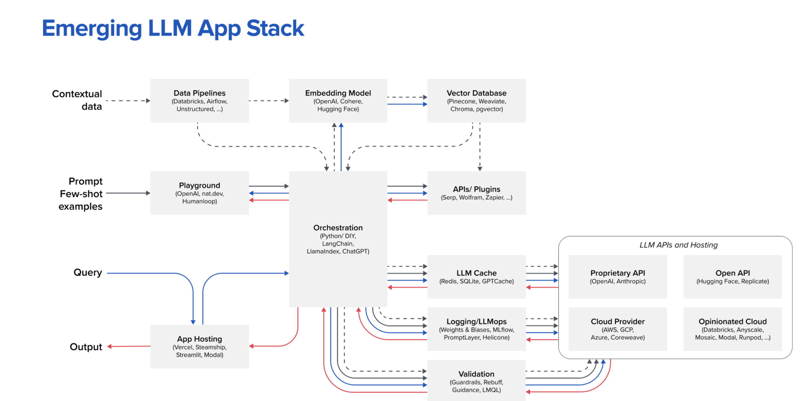

2025.09.28
📅 Day 1: 战略与架构——构建产品的护城河
上午 (9:00 - 12:00) | 理论输入：系统化思考
 好的，这张图正是 a16z 提出的**“新兴LLM应用技术栈 (Emerging LLM App Stack)”**，它几乎是所有严肃的 AI Agent 和 LLM 应用开发者/产品经理都必须理解的“战略地图”。
我会为你进行深度解读，不仅解释每个模块是什么，更重要的是解释它们之间的关系以及作为产品经理应该如何思考。
一句话总结
这张图描绘了构建一个超越简单API调用的、**生产级的、有竞争力的 LLM 应用（特别是 Agent）**所需要的所有技术组件和它们之间的协作关系。你的产品护城河，就藏在这张图的组合与优化之中。
核心解读：三条生命线
为了更好地理解，我们可以看到图中有三条主要的“生命线”（用不同颜色的箭头表示）：
- 蓝色箭头 🔵 (请求流): 代表从用户查询 (Query) 开始，经过层层处理，最终到达 LLM 的路径。
- 红色箭头 🔴 (响应流): 代表 LLM 生成结果后，经过处理，最终返回给用户的路径。
- 黑色/虚线箭头 ⚫ (数据/控制流): 代表组件之间的数据准备、配置和交互。
模块化深度解析
让我们从上到下、从左到右来拆解这张战略地图。
第一部分：数据与上下文准备 (The RAG Core)
这是让你的 Agent 拥有私有知识和长期记忆的关键，也是构建壁垒的第一步。
-
Contextual data (上下文数据):
- 这是什么: 你的私有数据源。可以是结构化的（数据库）、非结构化的（PDF、Word、Notion文档、网页）。
- 产品思考: 你的 Agent 的独特性首先来自于它能接触到的独特数据。数据质量、覆盖度和实时性是产品竞争力的源泉。
-
Data Pipelines (数据管道):
- 这是什么: 用于处理、清洗、转换上述原始数据的工具链（如 Databricks, Airflow）。它负责将杂乱的数据变成干净、可用的格式。
- 产品思考: 管道的健壮性决定了你的 Agent 知识更新的频率和可靠性。一个能自动处理新知识的管道，远比手动上传文档要有价值。
-
Embedding Model (嵌入模型):
- 这是什么: 将文本数据转化为数学向量（Vector）的模型。这是让机器理解文本语义的关键一步。
- 产品思考: 选择哪个 Embedding 模型会直接影响后续检索的质量和成本。这是一个重要的技术选型决策。
-
Vector Database (向量数据库):
- 这是什么: Agent 的长期记忆库。 它专门用于存储和快速检索大量的文本向量。当用户提问时，系统会先在这里找到最相关的“记忆片段”。
- 产品思考: 这是 RAG (检索增强生成) 架构的核心。数据库的性能（检索速度、精度）直接影响用户体验。选择自托管还是云服务？这也是一个关键决策。
第二部分：核心应用逻辑与编排 (The Brain & Nervous System)
这是你 Agent 的“大脑皮层”，是所有逻辑、决策和控制发生的地方。这里是你的核心“秘密武器”所在。
-
Orchestration (编排层):
- 这是什么: 整个应用的中枢神经系统。 负责接收用户请求，决定下一步该做什么：是直接问 LLM？还是先去向量数据库里查资料？还是需要调用外部工具（API）？
- 工具: LangChain, LlamaIndex 等框架就是为了简化这里的逻辑开发。
- 产品思考: 你的核心产品逻辑和业务流程就实现在这一层。 例如，一个“旅行规划 Agent”的编排逻辑可能是：
理解用户意图 -> 调用天气API -> 检索向量数据库找景点 -> 调用订票API -> 组织语言生成规划。这个流程的设计，就是产品经理的核心工作。
-
APIs / Plugins (工具集):
- 这是什么: Agent 的手和脚。 让 Agent 能够与真实世界交互、获取实时信息或执行操作的能力。例如，搜索（Serp）、计算（Wolfram）、连接其他应用（Zapier）。
- 产品思考: Agent 的能力边界取决于你为它提供了多少高质量的工具。工具库的丰富性和可靠性是产品功能强大的基础。
-
Playground (调试与提示工程):
- 这是什么: 用于开发、测试和优化 Prompt 的环境。
- 产品思考: Prompt Engineering 是 Agent 设计的核心环节。一个好的 Playground 能极大提升调试效率，让产品经理和工程师能快速迭代 Agent 的行为和说话风格。
第三部分：与大模型的交互层 (The Interface to LLMs)
这是连接你的应用和底层大模型的“中间件”，负责效率、成本和安全。
-
LLM Cache (缓存):
- 这是什么: 缓存对 LLM 的请求和响应。如果遇到完全相同的问题，直接返回缓存结果，无需再次调用昂贵的 LLM API。
- 产品思考: 这是降本增效的关键。对于高频、重复性的查询，缓存能显著降低成本和响应时间。
-
Logging / LLMops (日志与监控):
- 这是什么: 记录每一次与 LLM 交互的详细日志（输入、输出、Token消耗、延迟等）。这是 Agent 的“飞行数据记录仪”。
- 产品思考: 没有监控，就没有优化。 你需要通过这些数据来分析 Agent 的表现、发现问题、计算成本，并为后续的迭代提供依据。这是产品进入生产环境的必备模块。
-
Validation (验证与安全):
- 这是什么: 确保 LLM 的输入和输出是安全、合规、格式正确的“安全护栏”。例如，防止提示词注入攻击，确保输出的是有效的 JSON 格式。
- 产品思考: 随着 Agent 自主性增强，验证层变得至关重要。它能防止 Agent “胡说八道”或执行危险操作，是产品可靠性的保障。
第四部分：底层模型与托管 (The Foundation)
- LLM APIs and Hosting (大模型接口与托管):
- 这是什么: 你最终选择调用的底层大模型服务。
- 分类:
- Proprietary API (闭源): OpenAI, Anthropic 等，性能强大，但成本高，有数据隐私风险。
- Open API (开源): Hugging Face, Replicate 等平台上的各种开源模型，灵活性高，可私有化部署。
- Cloud Provider: AWS Bedrock, Google Vertex AI 等，将多种模型集成在云平台中。
- Opinionated Cloud: Anyscale, MosaicML 等，提供专门针对 AI 模型的优化托管服务。
- 产品思考: 这是最基础也是最重要的战略决策。选择哪个模型？是单一模型还是多模型路由？是否考虑私有化部署？这决定了你产品的性能上限、成本结构和未来的可扩展性。
作为产品经理，你该如何运用这张图？
- 全局视野 (Blueprint): 这张图是你构建任何复杂 Agent 产品的技术蓝图。在产品设计初期，就应该对照这张图，思考你的产品需要哪些组件。
- 战略决策 (Strategic Choices): 你需要在每个模块上做出“自研 vs. 购买 vs. 开源”的决策。例如：向量数据库是用 Pinecone (购买) 还是自建 Milvus (开源)？
- 护城河分析 (Moat Analysis): 你的核心竞争力在哪？
- 是在 Contextual data 和 Data Pipelines 吗？（数据壁垒）
- 是在 Orchestration 的复杂业务逻辑和 APIs/Plugins 的独特工具集吗？（工作流/生态壁垒）
- 还是在 Validation 和 LLMops 带来的极致稳定性和可靠性？（企业级服务壁垒）
- 成本管理 (Cost Management): 这张图清晰地展示了成本的来源：Embedding、向量数据库、LLM API 调用、Hosting… 你可以针对性地在
LLM Cache等环节进行优化。 - 团队沟通 (Communication Tool): 这张图是与工程师、架构师沟通的绝佳工具，能帮助你们在同一个频道上讨论技术选型和架构设计。
总而言之，这张图告诉你，一个成功的 Agent 产品远不止是prompt -> LLM -> output那么简单，它是一个由多个专业组件构成的复杂系统。真正的产品创新，往往来自于对这个系统中的某个或某几个模块进行深度的、创造性的优化和组合。
大纲
-
Agentic 产品的价值定位与商业模式
- 必读文章: a16z - “Navigating the Emerging Architecture of LLM-based Agents”
- 为什么顶级: a16z 作为顶级风投，这篇文章从投资和产业结构的高度剖析了 Agent 的架构演进和潜在的价值捕获点，帮你建立宏观战略视野。
- 必读文章: Sarah Guo (Conviction) - “The New New Moats”
- 为什么顶级: Sarah Guo 对 AI 时代的“护城河”有非常深刻的见解。这篇文章会让你重新思考数据、模型、工作流在 Agent 产品中的真正壁垒是什么，超越“我有数据”的浅层认知。
- 必读分析: Stratechery by Ben Thompson
- 为什么顶级: 建议直接搜索 Stratechery 网站关于 AI、OpenAI、Inflection 等公司的文章。Ben Thompson 是全球顶级的科技战略分析师，他的文章能帮你理解 Agent 产品背后的生态位和平台战争。
- 必读文章: a16z - “Navigating the Emerging Architecture of LLM-based Agents”
-
高级 Agent 架构：从单一到协作
- 必读博客: Lilian Weng - “LLM Powered Autonomous Agents”
- 为什么顶级: Lilian Weng (OpenAI 应用AI研究负责人) 的这篇博客是 Agent 领域的“圣经”，系统性地梳理了 Agent 的核心组件、规划、记忆和工具使用。这是理论基础的终极参考。
- 必读框架文档: Microsoft - AutoGen 官方文档
- 为什么顶级: AutoGen 是多智能体协作的代表性框架。深入阅读其“Conversational Programming”理念和多样的协作模式（如 GroupChat），能帮你理解如何将复杂的任务流“代码化”为 Agent 间的对话。
- 必读论文/解读: CrewAI 的核心理念
- 为什么顶级: CrewAI 强调“基于角色的流程编排”。建议阅读其官方文档，并搜索相关的技术解读。它在工程实践和业务流程自动化方面提供了非常清晰的思路，比 AutoGen 更侧重于可控的协作流程。
- 必读博客: Lilian Weng - “LLM Powered Autonomous Agents”
晚上 (19:00 - 21:00) | 战略推演
- 推荐书籍/理论: Hamilton Helmer - “7 Powers: The Foundations of Business Strategy”
- 为什么顶级: 这不是一本 AI 书，而是战略领域的经典。你需要做的练习是，将“规模经济”、“网络效应”、“转换成本”等七种力量，强行套用在你正在构建的 Agent 产品上，思考如何通过产品设计来构建这些力量。
+++ 工作：
- ai搭子工作流搭建
提升：
- 写cv
非常好！既然你已经有了一年的智能体（Agent）实战经验，那我们完全跳过基础概念，直击**从“能用”到“卓越”**所需要的核心产品能力。
这个3天计划专为有经验的从业者设计，目标是帮你突破瓶颈，建立战略性、系统性的 Agent 产品思维，让你能驾驭更复杂、更具商业价值的智能体产品。
核心理念
- Day 1: 战略与架构 (Strategy & Architecture) - 从单点功能到构建可扩展、有壁垒的智能体系统。
- Day 2: 自主性与体验 (Autonomy & Experience) - 设计真正能自主决策的 Agent，并解决其带来的独特 UX 挑战。
- Day 3: 生产化与增长 (Production & Growth) - 将 Agent 产品可靠地推向市场，并构建其自我进化的飞轮。
前置准备
- 心态: 从“实现者”转变为“架构师”和“战略家”。准备好挑战现有认知，思考更深层次的“Why”和“How”。
- 靶子项目: 选择一个你正在负责或构思的、足够复杂的 Agent 项目。例如：“一个能自主完成市场研究报告的多 Agent 系统”、“一个能管理销售全流程的 CRM Agent”、“一个能进行代码库级 Bug 修复的开发 Agent”。接下来的所有实践都围绕它展开。
- 工具: 除了常规工具，建议准备好一个可以进行系统设计的工具，如 Miro、Whimsical 或 draw.io。
📅 Day 1: 战略与架构——构建产品的护城河
本日目标： 超越单一 Agent 的功能实现，从系统层面思考产品的商业模式、技术选型和长期壁垒。
上午 (9:00 - 12:00) | 理论输入：系统化思考
-
【读/思】Agentic 产品的价值定位与商业模式 (1.5小时)
- 阅读： a16z, Sequoia 等顶级 VC 关于 AI Agent 投资逻辑的文章。思考：Agent 产品的核心价值是“降本”、“增效”还是“创造新体验”？
- 分析： 研究 2-3 个头部 Agent 产品（如 Perplexity, Adept, Imbue）的商业模式。它们是 SaaS 订阅、按量付费 (Token-based)，还是其他混合模式？这背后反映了怎样的产品战略？
- 核心收获： 建立 Agent 产品的商业直觉，能清晰地阐述你的产品在价值链中的位置和盈利模式。
-
【读/看】高级 Agent 架构：从单一到协作 (1.5小时)
- 深入研究： Multi-Agent Systems (MAS)。阅读 CrewAI, Autogen 等框架的官方文档，重点理解不同 Agent 角色（如 Planner, Executor, Critic）之间的协作模式和通信协议。
- 学习权衡： 了解分层 Agent 架构（Hierarchical Agents）与扁平化协作的优劣。什么时候应该用一个强大的“主管 Agent”来协调，什么时候应该让 Agent 自由涌现协作？
- 核心收获： 掌握设计复杂任务解决系统的能力，能根据业务需求选择并设计合适的多智能体架构。
下午 (14:00 - 17:00) | 实践输出：系统蓝图设计
- 【练】架构你的靶子项目 (3小时)
- 任务： 为你的“靶子项目”设计一个多智能体系统架构图。
- 步骤：
- 目标拆解： 将项目的最终目标拆解为需要不同专业技能的子任务。
- 角色定义： 为每个子任务设计一个专门的 Agent 角色，并清晰定义其 Prompt Persona (身份指令)、专属工具 (Tools) 和私有知识库 (Knowledge)。
- 协作流设计： 在 Miro 或 draw.io 中，画出这些 Agent 之间如何传递信息、如何触发彼此、以及如何处理冲突或达成共识的工作流。明确定义共享记忆 (Shared Memory) 的机制。
- 技术选型思考： 在架构图旁注明你的关键技术选型考量。例如：为什么选择这个 LLM？记忆模块是用向量数据库还是传统数据库？工具（API）是自建还是第三方？
晚上 (19:00 - 21:00) | 战略推演
- 【思】 为你的项目进行护城河分析。你的产品壁垒是来自专有数据、独特的 Agent 协作框架、强大的工具集、用户反馈飞轮，还是先发优势？如果巨头入场，你如何应对？
📅 Day 2: 自主性与体验——驾驭不确定性
本日目标： 聚焦于提升 Agent 的自主决策能力，并为这种不确定性极强的系统设计出色的用户体验。
上午 (9:00 - 12:00) | 理论输入：人机交互新范式
-
【读/看】提升 Agent 的规划与推理能力 (1.5小时)
- 超越 ReAct： 深入了解更高级的规划算法，如 Tree of Thoughts (ToT) 和 Graph of Thoughts (GoT) 的核心思想。理解它们如何通过多路径探索和评估来提升决策质量。
- 自我反思： 学习自我批判/反思 (Self-Criticism/Reflection) 机制。Agent 如何评估自己的行为、发现错误并进行自主修正？研究相关的论文或实现思路。
- 核心收获： 掌握提升 Agent “智商”的核心方法论，使其在面对复杂、开放性问题时表现更优。
-
【读】Agentic UX：为自主系统而设计 (1.5小时)
- 阅读： 搜索并阅读关于 “UX for AI Agents” 或 “Human-Agent Interaction” 的设计原则文章。
- 核心挑战： 聚焦于三大 UX 挑战：
- 可观测性 (Observability): 如何让用户清晰地看到 Agent 的“思考过程”和“行动计划”，而不是一个黑箱？
- 可干预性 (Intervenability): 用户应在何时、以何种方式介入 Agent 的工作流？如何设计“暂停、修改、继续”的交互？
- 信任建立 (Trust Building): 如何通过 UI/UX 设计，让用户逐步建立对这个非确定性系统的信任？
- 核心收获： 建立一套全新的 UX 设计知识体系，适用于高度动态和自主的 Agent 产品。
下午 (14:00 - 17:00) | 实践输出：设计人机交互界面
- 【练】设计 Agent 的“任务控制台” (3小时)
- 任务： 为你的“靶子项目”设计一个核心的监控和干预界面（Mission Control UI）。
- 步骤（使用 Figma 或纸笔）：
- 实时状态流： 设计一个区域，以时间线或日志流的形式，用自然语言实时展示 Agent 当前正在“想什么”、“做什么”、“调用了什么工具”。
- 行动计划可视化： 将 Agent 生成的未来行动计划（Plan）可视化出来，让用户可以提前预览。
- 干预点设计： 在流程中设计明确的交互节点，允许用户在关键决策点进行批准 (Approve)、编辑 (Edit) 或否决 (Veto)。
- 历史与回溯： 设计一个可以查看历史任务记录和决策路径的功能，便于复盘和调试。
晚上 (19:00 - 21:00) | 深度案例分析
- 【看/拆】 深度体验并拆解 Devin 的产品演示视频。暂停、截图，分析它的 UI 是如何解决上述“可观测性”、“可干预性”和“信任”问题的。它的交互设计有哪些巧妙之处？有哪些可以借鉴到你的项目中？
📅 Day 3: 生产化与增长——构建进化飞轮
本日目标： 学习如何对复杂的 Agent 系统进行有效的评估、部署，并设计能够让产品自我迭代的增长闭环。
上午 (9:00 - 12:00) | 理论输入：工程与科学的结合
-
【读/看】生产级 Agent 评估体系 (1.5小时)
- 超越 Evals： 了解自动化、端到端的 Agent 评估框架（如 LangSmith, TruLens, RAGAs）。重点关注如何评估多步任务的鲁棒性和一致性。
- 学习指标： 除了任务成功率，深入研究更细致的评估指标：工具调用失败率、无效步骤比率、Token 成本/任务比、决策路径最优性等。
- 红队测试 (Red Teaming): 学习如何系统性地对 Agent 进行对抗性攻击和压力测试，发现其逻辑漏洞和安全风险。
- 核心收获： 建立一套科学、可复现、自动化的 Agent 评估体系，确保产品质量和迭代效率。
-
【读】Agent 产品的增长飞轮 (1.5小时)
- 数据闭环： 思考 Agent 产品的独特数据资产是什么？是用户的高意图指令？是 Agent 的成功/失败决策路径？还是工具调用的日志？
- 学习机制： 设计一个数据飞轮 (Data Flywheel)。如何将生产环境中的用户交互数据和 Agent 行为数据，结构化地回流到：
- 知识库的更新 (RAG anrichment)
- 工具的优化 (Tool usage fine-tuning)
- 模型的微调 (Model fine-tuning)
- 核心收获： 将产品增长思维融入 Agent 设计，让产品每一次被使用都在变得更聪明，从而构建真正的长期壁垒。
下午 (14:00 - 17:00) | 实践输出：制定上线与迭代计划
-
【练】制定 Agent 的评估与红队测试计划 (1.5小时)
- 任务： 为你的“靶子项目”的核心功能，制定一份评估和红队测试计划文档。
- 内容应包括： 至少 10 个覆盖核心路径、边缘 case 和对抗性输入的测试用例；定义每个用例的成功/失败标准；确定需要监控的核心量化指标。
-
【练】设计产品的“进化飞轮” (1.5小时)
- 任务： 画出你产品的“数据与智能”流动图。
- 步骤：
- 明确用户与 Agent 的核心交互点。
- 定义在这些交互点上，哪些数据是“高价值”的，需要被捕捉。
- 设计这些数据如何被处理、标注，并最终反馈到 Agent 系统的哪个部分（知识库、模型、工具库）。
- 思考如何激励用户提供高质量的反馈（例如，通过“点赞/点踩”某个执行步骤）。
晚上 (19:00 - 21:00) | 总结与未来展望
- 【总】 更新你的“AI Agent 产品知识地图”，这次应包含战略层、架构层、体验层、评估层和增长层。
- 【划】 思考 Agent 领域的下一个重大突破可能在哪里？是更强的自主性（长期 Agent）？是具身智能（Embodied AI）？还是 Agent 之间的经济系统？你的产品应该如何布局以迎接下一个浪潮？
- 【看】 关注 AI 前沿研究，例如 David Shapiro, Matt Schumer 等人的 YouTube 频道，或者顶会（NeurIPS, ICML）的最新论文，保持对技术前沿的绝对敏感。
这个计划强度极大，但完成它，你的认知水平将从一个 Agent 的执行者，提升到一个复杂智能系统的架构师和战略家。祝你突破成功！
好的，这绝对是关键的一步。为有经验的你，我将为之前规划的每一步匹配行业公认的顶级、前沿且深刻的资源。这些不是入门读物，而是能帮你建立深度认知和战略壁垒的材料。
📅 Day 1: 战略与架构——构建产品的护城河
上午 (9:00 - 12:00) | 理论输入：系统化思考
-
Agentic 产品的价值定位与商业模式
- 必读文章: a16z - “Navigating the Emerging Architecture of LLM-based Agents”
- 为什么顶级: a16z 作为顶级风投，这篇文章从投资和产业结构的高度剖析了 Agent 的架构演进和潜在的价值捕获点，帮你建立宏观战略视野。
- 必读文章: Sarah Guo (Conviction) - “The New New Moats”
- 为什么顶级: Sarah Guo 对 AI 时代的“护城河”有非常深刻的见解。这篇文章会让你重新思考数据、模型、工作流在 Agent 产品中的真正壁垒是什么，超越“我有数据”的浅层认知。
- 必读分析: Stratechery by Ben Thompson
- 为什么顶级: 建议直接搜索 Stratechery 网站关于 AI、OpenAI、Inflection 等公司的文章。Ben Thompson 是全球顶级的科技战略分析师，他的文章能帮你理解 Agent 产品背后的生态位和平台战争。
- 必读文章: a16z - “Navigating the Emerging Architecture of LLM-based Agents”
-
高级 Agent 架构：从单一到协作
- 必读博客: Lilian Weng - “LLM Powered Autonomous Agents”
- 为什么顶级: Lilian Weng (OpenAI 应用AI研究负责人) 的这篇博客是 Agent 领域的“圣经”，系统性地梳理了 Agent 的核心组件、规划、记忆和工具使用。这是理论基础的终极参考。
- 必读框架文档: Microsoft - AutoGen 官方文档
- 为什么顶级: AutoGen 是多智能体协作的代表性框架。深入阅读其“Conversational Programming”理念和多样的协作模式（如 GroupChat），能帮你理解如何将复杂的任务流“代码化”为 Agent 间的对话。
- 必读论文/解读: CrewAI 的核心理念
- 为什么顶级: CrewAI 强调“基于角色的流程编排”。建议阅读其官方文档，并搜索相关的技术解读。它在工程实践和业务流程自动化方面提供了非常清晰的思路，比 AutoGen 更侧重于可控的协作流程。
- 必读博客: Lilian Weng - “LLM Powered Autonomous Agents”
晚上 (19:00 - 21:00) | 战略推演
- 推荐书籍/理论: Hamilton Helmer - “7 Powers: The Foundations of Business Strategy”
- 为什么顶级: 这不是一本 AI 书，而是战略领域的经典。你需要做的练习是，将“规模经济”、“网络效应”、“转换成本”等七种力量，强行套用在你正在构建的 Agent 产品上，思考如何通过产品设计来构建这些力量。
📅 Day 2: 自主性与体验——驾驭不确定性
上午 (9:00 - 12:00) | 理论输入：人机交互新范式
-
提升 Agent 的规划与推理能力
- 必读论文: Yao et al. - “Tree of Thoughts: Deliberate Problem Solving with Large Language Models”
- 为什么顶级: 这是超越 Chain of Thought 的关键一步。理解 ToT 的“多路径探索+评估”机制，是让你设计的 Agent 在面对复杂决策时“更聪明”的核心理论基础。建议直接阅读 ArXiv 上的原论文摘要和图示。
- 必读论文: Madaan et al. - “Self-Refine: Iterative Refinement with Self-Feedback”
- 为什么顶级: 这篇论文系统性地阐述了如何让 LLM 自我批判和迭代优化。这是构建能自我修正、持续进化的 Agent 的关键技术。
- 必看视频: Andrej Karpathy 在各种演讲中关于 “LLM OS” 的概念
- 为什么顶级: Karpathy（前特斯拉AI总监，OpenAI创始成员）把 LLM 描绘成一个新型操作系统。理解这个比喻，能帮助你从根本上思考 Agent 的规划、记忆、工具调用是如何协同工作的。
- 必读论文: Yao et al. - “Tree of Thoughts: Deliberate Problem Solving with Large Language Models”
-
Agentic UX：为自主系统而设计
- 必读指南: Google - “People + AI Guidebook”
- 为什么顶级: 这是目前为止最系统、最权威的 AI 产品 UX 设计指南。重点关注“Mental Models”、“Feedback & Control”、“Errors & Graceful Failure”等章节，里面充满了可以直接应用的原则和案例。
- 必读文章: Jared Spool - “Designing for the Unexpected in AI” (或类似主题文章)
- 为什么顶级: Jared Spool 是 UX 设计领域的传奇人物。他的思考框架能帮助你从“确定性”的传统软件设计，切换到“概率性”的 AI 系统设计，尤其在处理错误和不确定性时极具启发。
- 案例研究: GitHub Copilot 的交互设计演进
- 为什么顶级: Copilot 是最成功的人机协作 Agent 之一。研究它的代码建议、错误修正、聊天交互等 UI/UX 的演变过程，是学习 Agentic UX 的最佳实践案例。
- 必读指南: Google - “People + AI Guidebook”
晚上 (19:00 - 21:00) | 深度案例分析
- 必看视频: Cognition AI 的 Devin 发布会/演示视频
- 为什么顶级: 反复观看并逐帧分析 Devin 的界面。注意它是如何展示**实时任务流（左侧）、浏览器/代码（中间）、对话（右侧）**的。这是目前解决 Agent “可观测性”和“可干预性”问题的最佳公开范例。
📅 Day 3: 生产化与增长——构建进化飞轮
上午 (9:00 - 12:00) | 理论输入：工程与科学的结合
-
生产级 Agent 评估体系
- 必读工具/文档: LangChain - LangSmith 官方文档
- 为什么顶级: LangSmith 是目前最成熟的 LLM 应用可观测性平台。深入学习它的 Trace（追踪）、Dataset & Testing（评估集）和 Monitoring（监控）功能，是让你了解生产级 Agent 如何被调试和评估的最佳途径。
- 必读框架: RAGAs (RAG Assessment)
- 为什么顶级: 如果你的 Agent 严重依赖 RAG，那么 RAGAs 是评估其表现的黄金标准。它提供了一套不依赖于人工标注答案的评估指标（如 Faithfulness, Answer Relevancy），是实现自动化评估的关键。
- 必读文章: OpenAI - “Our approach to AI safety”
- 为什么顶级: 理解 OpenAI 如何进行红队测试（Red Teaming）和安全策略。这能帮你建立超越功能测试的、更全面的 Agent 鲁棒性和安全性评估思维。
- 必读工具/文档: LangChain - LangSmith 官方文档
-
Agent 产品的增长飞轮
- 必看视频: Andrej Karpathy - “State of GPT”
- 为什么顶级: 在这个演讲中，他详细解释了 OpenAI 的“数据引擎”是如何运作的。理解从用户数据到微调（Fine-tuning）这个闭环，是构建 Agent 进化飞轮的核心思想。
- 必读博客: Eugene Yan - “Patterns for Building LLM-based Systems & Products”
- 为什么顶级: Eugene Yan (前 Amazon 机器学习科学家) 的博客干货极多。这篇文章系统总结了 LLM 产品的工程和设计模式，其中关于数据收集、标注和模型迭代的部分，对设计增长飞油轮非常有价值。
- 必读概念: Direct Preference Optimization (DPO)
- 为什么顶级: DPO 正在成为替代 RLHF 的主流技术。作为产品经理，你不需要理解所有数学细节，但需要明白它如何利用简单的“偏好数据”（哪个回答更好）来高效优化模型，这将直接影响你设计用户反馈机制的方式。
- 必看视频: Andrej Karpathy - “State of GPT”
持续充电的顶级资源
- Newsletter: SemiAnalysis (顶级芯片和 AI 产业分析), TheSequence (AI 技术和产业深度解读)。
- 人物 (Twitter/X): Andrej Karpathy, Yann LeCun, Jim Fan (英伟达AI科学家), François Chollet (Keras作者), Lilian Weng。
- 论文阅读: ArXiv Sanity Preserver (Karpathy开发，高效筛选最新论文), Papers with Code (查看论文的实现和排行榜)。
这个资源列表是为你精心挑选的“特种部队”级装备。啃下来，你的认知深度将远超大多数从业者。祝你学习愉快！